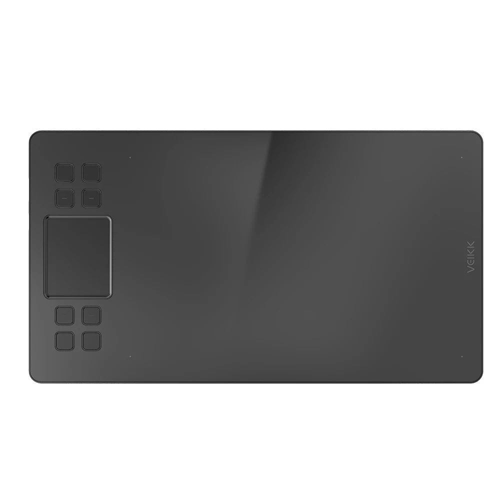
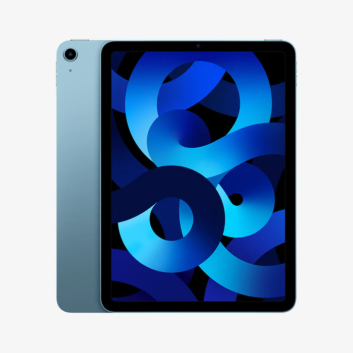
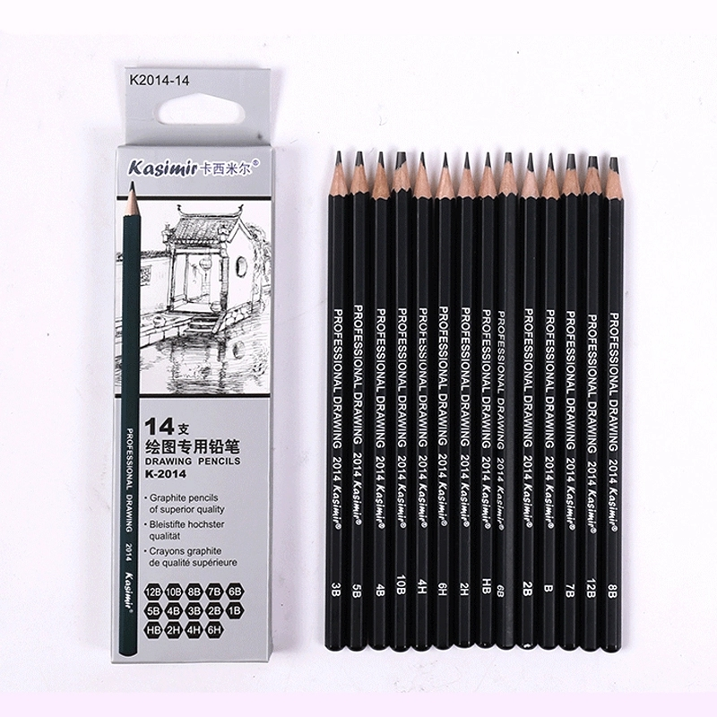
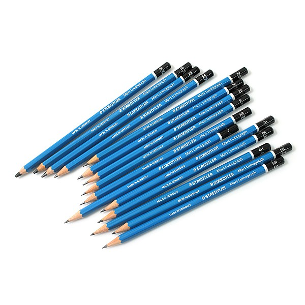
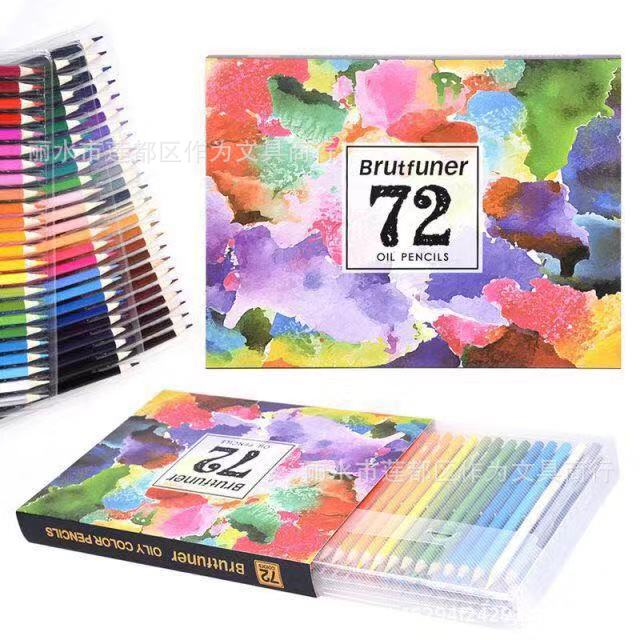
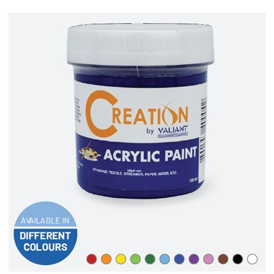
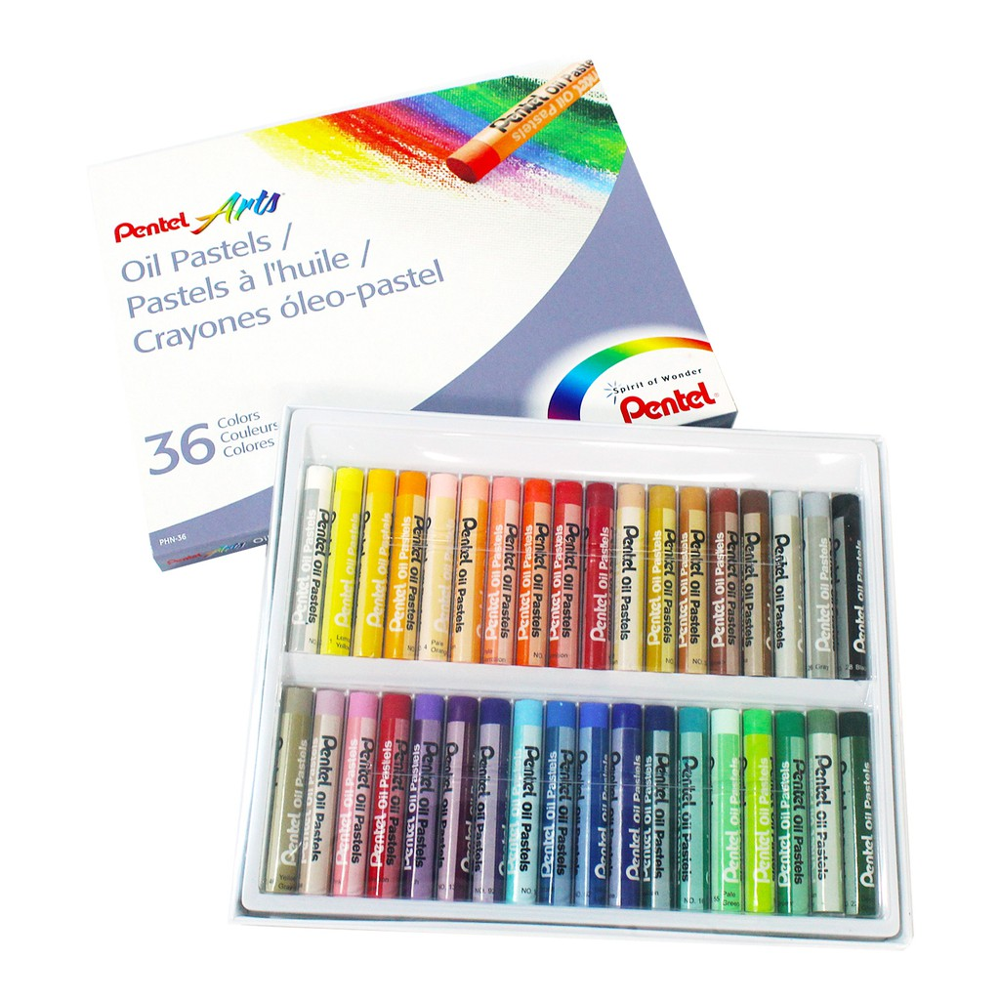

Digital Art
Digital art has been popular for a while now and many artist had switch from traditional drawing to digital drawing, and I'm one of those that transitioned. Below are the devices I use to draw digitally besides my phone and hopefully you might get an idea of where to start if you're interested to draw digitally.
Veikk A50
This is the first drawing tablet that I used to draw digitally besides my phone, I recommend it for both beginners and professional as it has many shortcut keys for more efficient drawing and a bigger work area for you to comfortably draw. The downside is you need to get used to not seeing where you draw.
Ipad Air
A lot of artist are familiar with Apple and their Ipads as it is a go to device for a lot of artist because of its Apple Pencil, drawing apps such as Procreate and many more. It's one of the reason why I bought it so that I can draw anytime, anywhere without having to bring a heavy laptop. And while it is a good device, not many people can afford it so you could instead find cheaper alternatives that can be similar to an Ipad.
Traditional Art
Digital art may be popular but so is tradional art. Although expensive due to the constant buying of materials, traditional art is still sought out because it seems more authentic. A lot of people still commission traditional artists to do portrait drawings of themselves or others because some of them may want a physical copy instead. There are still a lot you can do with traditonal art and below are some of the view materials I use when drawing.
Kasimir
One of the first pencils I used to create anime portraits. They are cheap but some of the values that are labeled are not exactly the shade, but using this is good practice to learn values in drawing.
Staedtler
Same with the Kasimir pencil, I also use this for anime portraits but it's much better in quality. It also has a variety of shade and accurate, unlike other cheap brands. Although, the price of one of these pencil is expensive compared to the pencils we commonly know
Brutfuner
Brutfuner is a colored pencil brand that I used for a while after charcoal/graphite drawing. It's affordable and a good quality brand for colorful artwork. I recommend this for beginners or for those who want to practice with different colors so that it won't be wasteful as much when you use expensive brands like Prismacolor.
Valiant
This acrylic paint is one that is commonly used by artists, it's affordable, the quality is good and has a fair amount of paint. I have used this in some of my paintings, particularly glass paintings and phone case paintings and it produces great results. However when not used for a long time it can expire or be unusable.
Oil Pastel
A lot of people are familiar with this medium as we use this a lot in school, they are similar to crayons but softer and more pigmented. We can see it being used a lot by non-artists or artists and we often see artworks made of oil pastel in poster making activities in school. Although, this medium is quite tricky to use since colors don't blend much smoothly and can be quite messy depending on how you color.
